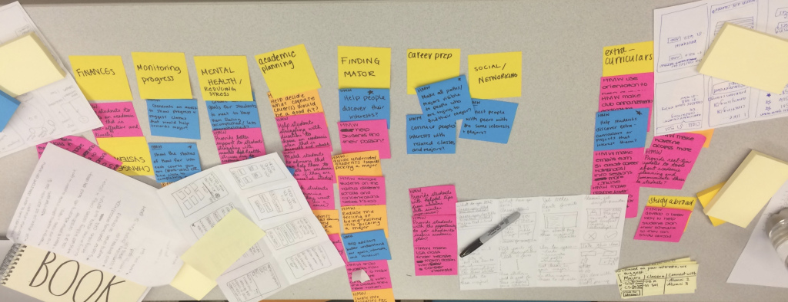
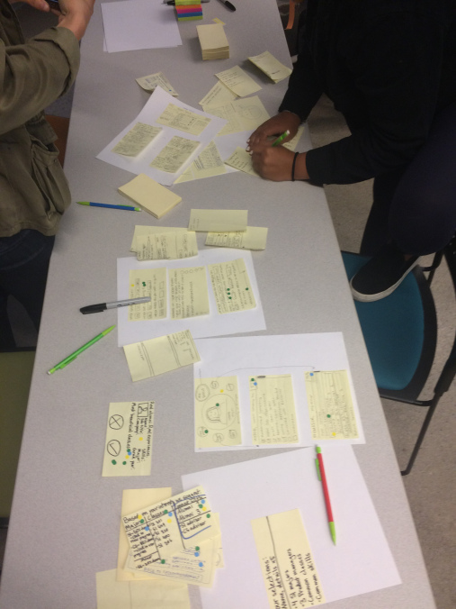
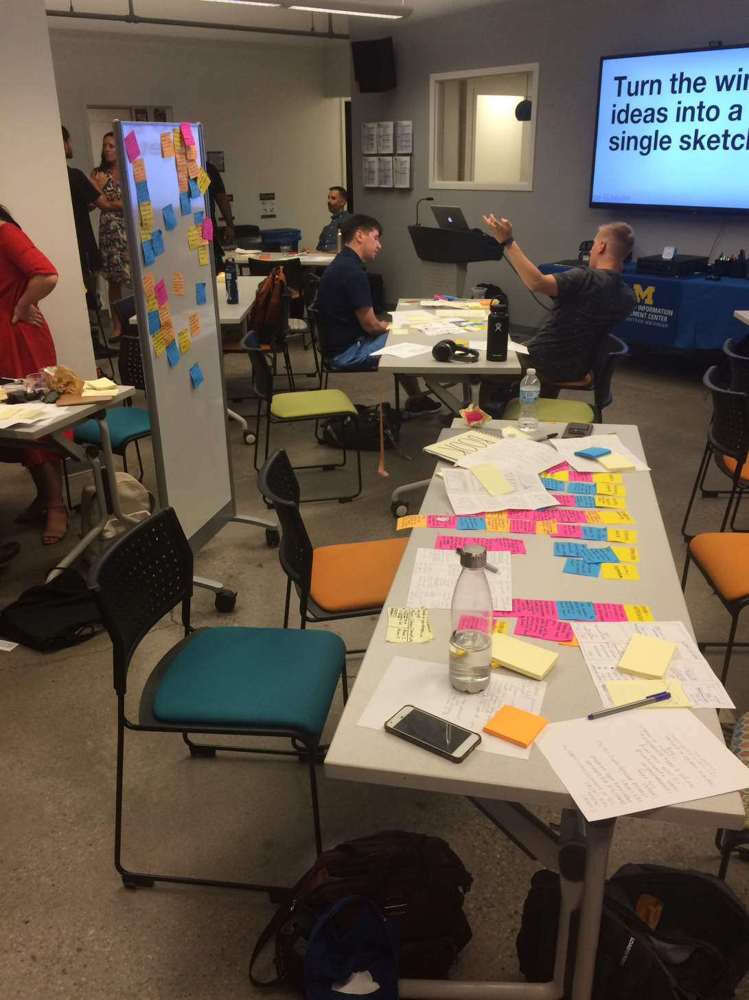

Student Services Application
 Client
Client
Personal Project
 Role
Role
UX Researcher
 Duration
Duration
September 2018
Skills: UX Research, Interviewing, Sketching, Needs Assessments
Problem:
Students in college are reporting increasingly high stress levels that have become unhealthy for their wellbeing. For this project, my task was to design a device that would help relieve some of the stress that students experience in college. This particular design jam was only three hours long, we I had to create a quality, high-level concept to present in a short amount of time.
The first step was to do some preliminary research. I decided to conduct some informational interviews involving my peers, college students. I constructed questions revolving around college experiences, including deciding which major and courses to take, searching for a career path, and dealing with person-specific stressors.
Then, my group and I brainstormed ideas to narrow the scope of our project. Between the four of us, we came up with almost 40 topics in 8 minutes. To organize our thoughts, we categorized our topics into umbrella groups based on similar foci.
We decided to move forward with the career preparation idea, mainly because we realized from our interviews that this is a huge source of stress for college students. The next step in our process was to sketch some basic prototypes for the layout of the application. Here, we each drew 8 sketches in 8 minutes to get our ideas on paper.
With our ideas in front of us, we had to determine which layouts would work best for the purpose of our application. Since the many of the students found the process of translating their major into a job difficult, we created a page that generates a list of jobs that alumni with the same major ended up pursuing. The hope for this feature was to not only inform students on potential career prospects, but also connect them with alumni that have similar interests.
For our final deliverable, I presented the feature that I designed myself, which was the course finder. In this page, students would input their interests, career hopes, and favorite courses that they have taken at the university, and the database would provide a list of recommended courses that the student should take. The idea behind this feature was to construct a schedule that provided the student with the specific skills they would need for the career that they pursue.
Solution:
My team and I designed a website connecting student interests with classes, career paths, and alumni that align with their talents and aspirations.